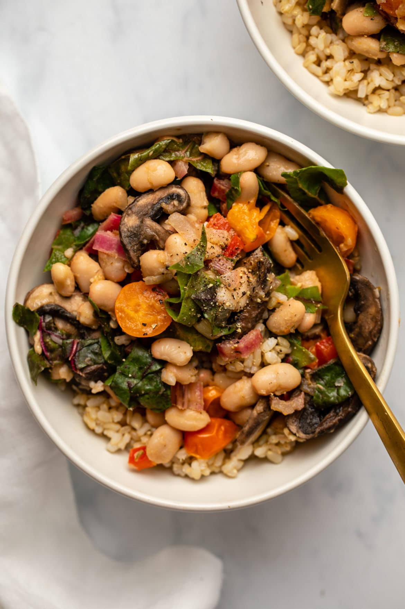

Stir Fry

Description
This recipe highlights the delicious tastes of fresh summer produce—flavors so unmatched that there’s no need for sauces or heavy seasoning! This Summer Veggie White Bean Stir-Fry is a seasonal medley of crisp, fragrant bell pepper, juicy cherry tomatoes, earthy Swiss chard, and meaty cremini mushrooms combined with creamy white beans for a summertime stir-fry that’s somehow fresh, tasty, and hearty!
Ingredients
- Tomatoes
- Olive Oil
- Bell Pepper
- Swiss Chard
- Onion
- Mushrooms
- Zucchini
- Spinach
- Garlic
- Black Beans
- Italian Seasoning
Steps
- Sauté the onion in olive oil until translucent, then add the bell pepper, mushrooms, and the stems from the Swiss chard, and season with Italian seasoning. Sauté until most of the liquid has evaporated.
- Add the garlic, tomatoes, and white beans to the mixture, season with salt and pepper, and continue to sauté until the tomatoes soften. Turn off the heat then stir in the leaves of the Swiss chard. Let sit until wilted; add more salt and pepper if necessary.